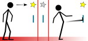

|
FAQ Preguntas Frecuentes sobre el software Chronojump
- ¿Puedo acceder al código fuente y modificar el programa?, ¿y venderlo?
Chronojump es software libre distribuido bajo los términos de la licencia GPL, lo que le permite estudiarlo, modificarlo, redistribuirlo, venderlo siempre respetando la citada licencia. Para más información acceda a la página web de GPL en la Wikipedia.
- ¿Cuánto dinero cuesta?
En la web siempre habrá una versión de Chronojump gratuita, pero usted puede comercializar si lo desea una versión, en ella se recomienda que ofrezca servicios extra para que sus clientes se decidan a comprarla. De entre los servicios podría ofrecer cursos a entrenadores, asesoría, integración de plataforma + cronómetro + software en un sólo equipo, ... también puede facillitar el programa si lo desea en cualquier curso, clase o conferencia que usted imparta.
- ¿En qué sistemas operativos y equipos informáticos funciona?
Chronojump está escrito para la plataforma de programación MONO, que ha sido concebida para facilitar que los programas informáticos funcionen un muchos sistemas operativos y equipamientos informáticos. Hasta el momento funciona en sistemas GNU/Linux y en Windows.
- ¿Cómo puedo descargar (download) el programa?
Acceda a la página web de productos.
- ¿Puedo probar Chronojump sin tener el cronómetro ni la plataforma de contactos?
Sí, se ha creado un modo simulado en que se ejecutan saltos, carreras de duración aleatoria, tiempos de reacción y ritmos para que pueda probar las características del programa.
- ¿Cómo puedo saber las últimas novedades del proyecto?
Consulte el Foro. Además puede consultar el archivo changelog o registro de cambios.
- ¿Por qué se llama Chronojump si también sirve para medir carreras, tiempos de reacción y ritmos?
La idea inicial era crear un software para la medición de eventos temporales del salto, pero se ha visto que con poco esfuerzo el mismo software puede servir para cronometrar todo tipo de carreras, tiempos de reacción y ritmos. Aunque se trabaja en estas líneas, los esfuerzos principales se destinan a la medición de saltos, por este motivo Chronojump conserva su nombre inicial.
- Me gustaría colaborar ¿cómo puedo hacerlo?
Consulte el Foro.
|
 |